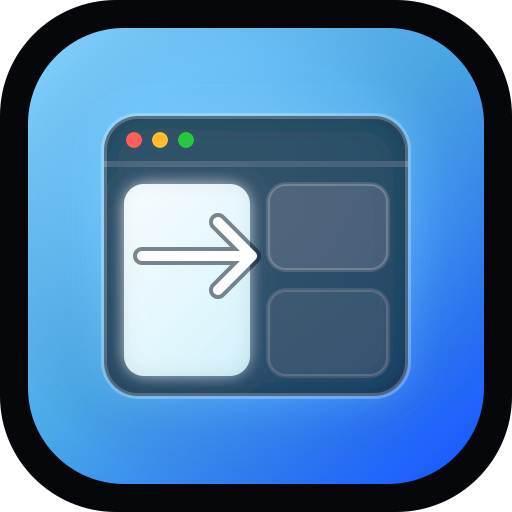

Custom snap zones
Create zones that match your real screens instead of forcing a fixed layout.
Native macOS menu bar app
Snapper gives you custom snap zones, fast keyboard control, and a clean on-screen editor for arranging windows without turning your desktop into a puzzle.
Free local build · ad-hoc signed · not Developer ID notarized yet

Free packaging path
Swift and SwiftUI native
Accessibility-powered window control
What it does
Create zones that match your real screens instead of forcing a fixed layout.
Move the focused window with fast hotkeys powered by native macOS APIs.
Draw zones directly over your displays for a workspace that mirrors how you work.
Snapper stays out of the Dock and lives quietly where utility apps belong.
How it works
Snapper stores your layout locally, listens for global shortcuts, and uses Accessibility permission to resize windows with native macOS window APIs.
Install
The DMG layout includes Snapper.app, an Applications shortcut, and install guidance. After copying the app, you can launch Snapper without repository terminal scripts.
Snapper.dmg/ApplicationsTrust notes
The free DMG is ad-hoc signed and not Developer ID notarized. macOS may show Gatekeeper warnings on first launch, so use right-click → Open or Privacy & Security approval if needed. Developer ID signing and notarization are the future path for smoother public distribution.
git clone https://github.com/gustavocaiano/snapper.git
cd snapper
./scripts/package_dmg.sh